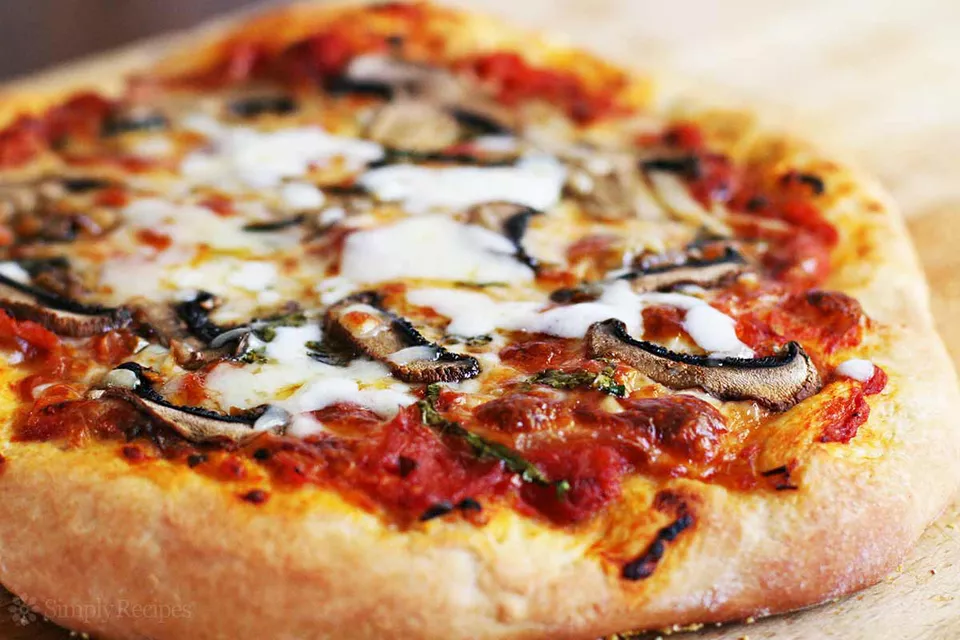

Pizza today
Recipe for pizza

Ingredients
Pizza Dough: Makes enough dough for two 10-12 inch pizzas
- 1 1/2 cups (355 ml) warm water (105°F-115°F)
- 1 package (2 1/4 teaspoons) of active dry yeast
- 3 3/4 cups (490 g) bread flour
- 2 tablespoons extra virgin olive oil (omit if cooking pizza in a wood-fired pizza oven)
- 2 teaspoons salt
- 1 teaspoon sugar
Pizza Ingredients
- Extra virgin olive oil
- Cornmeal (to help slide the pizza onto the pizza stone)
- Tomato sauce (smooth, or puréed)
- Firm mozzarella cheese, grated
- Fresh soft mozzarella cheese, separated into small clumps
- Fontina cheese, grated
- Parmesan cheese, grated
- Feta cheese, crumbled
- Mushrooms, very thinly sliced if raw, otherwise first sautéed
- Bell peppers, stems and seeds removed, very thinly sliced
- Italian pepperoncini, thinly sliced
- Italian sausage, cooked ahead and crumbled
- Sliced black olives
- Chopped fresh basil
- Baby arugula, tossed in a little olive oil, added as pizza comes out of the oven
- Pesto
- Pepperoni, thinly sliced
- Onions, thinly sliced raw or caramelized
- Ham, thinly sliced
Method
Making the pizza dough
- Proof the yeast
:max_bytes(150000):strip_icc():format(webp)/__opt__aboutcom__coeus__resources__content_migration__simply_recipes__uploads__2007__01__how-to-make-pizza-proof-yeast-2-6fd4af9d258d405c9f24cb71d7038116.jpg)
- Make and knead the pizza dough
- Let the dough rise
:max_bytes(150000):strip_icc():format(webp)/__opt__aboutcom__coeus__resources__content_migration__simply_recipes__uploads__2007__01__homemade-pizza-let-dough-rise-e60f3120d7e143388ba7a41f1f5b5c56.jpg)
Preparing the Pizzas
- Preheat pizza stone (or pizza pan or baking sheet)
- Divide the dough into two balls
:max_bytes(150000):strip_icc():format(webp)/__opt__aboutcom__coeus__resources__content_migration__simply_recipes__uploads__2007__01__homemade-pizza-form-two-balls-dough-4de4a1eaa76e48b8847bf8a74fcfc812.jpg)
- Prep toppings
- Flatten dough ball, and stretch out into a round
:max_bytes(150000):strip_icc():format(webp)/__opt__aboutcom__coeus__resources__content_migration__simply_recipes__uploads__2007__01__homemade-pizza-method-5-527eed195ff84cab9ad6bb21960b019e.jpg)
- Brush dough top with olive oil
- Sprinkle pizza peel with corn meal, put flattened dough on top
:max_bytes(150000):strip_icc():format(webp)/__opt__aboutcom__coeus__resources__content_migration__simply_recipes__uploads__2007__01__homemade-pizza-method-6-0ec17e05c64247208be4b4c1ef05b5a9.jpg)
:max_bytes(150000):strip_icc():format(webp)/__opt__aboutcom__coeus__resources__content_migration__simply_recipes__uploads__2007__01__homemade-pizza-method-7-e2bd02e5743846a3b3d84e983f5c3610.jpg)
- Spread with tomato sauce and sprinkle with toppings
:max_bytes(150000):strip_icc():format(webp)/__opt__aboutcom__coeus__resources__content_migration__simply_recipes__uploads__2007__01__homemade-pizza-method-8-44df698b9ac745cdb66a3137b33d8c6a.jpg)
:max_bytes(150000):strip_icc():format(webp)/__opt__aboutcom__coeus__resources__content_migration__simply_recipes__uploads__2007__01__homemade-pizza-method-9-f8568499caab481a96d7ed68a1e13e17.jpg)
- Sprinkle cornmeal on pizza stone, slide pizza onto pizza stone in oven
:max_bytes(150000):strip_icc():format(webp)/__opt__aboutcom__coeus__resources__content_migration__simply_recipes__uploads__2007__01__homemade-pizza-method-10-0e32cd0ab0d446af941499e26a252ccc.jpg)
- Bake pizza